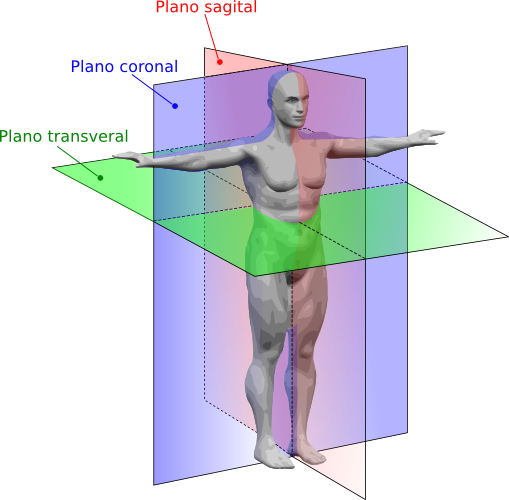
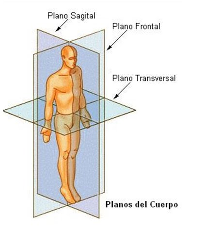
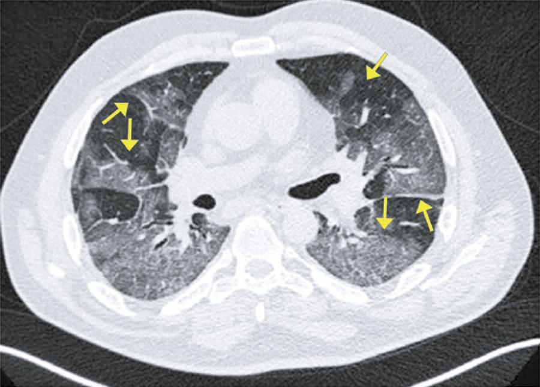

Notícias Cidade
Destaque
Atenção,Tomografia computadorizada
Tratando-se de um método de diagnóstico por imagem não invasivo,a tomografia computadorizada se define por uma combinação especial de aparelhos de raio-x ligados a computadores programados para produzir(representar) ou estudar a parte interna de um "objeto" de estudo,exemplificando com um organismo vivo,trata-se da representações de seus orgãos internos por meio de imagens em secções ou "fatias",representadas em um computador em áreas ou "planos"(SAGITAIS,AXIAIS E CORONAIS)
REPRESENTAÇÃO DOS PLANOS"CORTES"
 nas imagens acima podemos reparar os cortes e as meneiras que se separam,AXIAL(superior e inferior),SAGITAL(esquerda e direita),CORONAL(anterior e posterior)
Tomografia(Corte Axial) e covid

VIDRO FOSCO
Tratando-se de um achado tomografico(segue imagem acima) onde a estrutura pulmonar é representada por um discreto aumento da densidade pulmonar,sem obumbração de vasos e brônquios,tendo por possíveis causas o preenchimento parcial dos espaços aéreos ou espassamento do interstício,sendo notada em processos de diversas etiologias,infeciosas(diversos agentes)e não-infecciosas Leia Mais!RAIOS X
Ascendente da Tomografia

Descoberta em 8de novembro de 1895 por WILHELM CONRAD RONTGEN em WUZBURG(Alemanha) sendo a primeira radiografia em dezembro de 1895 tendo com o passar dos anos suas melhorias e aplicações médicas(sendo ascendente da tomografia computadorizada,segue imagem acima),onde em tempos de pandemia vem mostrando grande valor no dignóstico de Covid-19,não excluíndo outros métodos pra sua detecção,e mostrando uma sensibilidade menor(menos informações ou dados) em radiografias de tórax em relação a tomografias de tórax
MUNDO
-

Novas areas de estudo
"neste periodo de pandemia pessoas preucuram novas maneiras de se adaptar e ter novas rotinas!!!"
-

Novas areas de estudo
"raio-x de tórax vêm se motrando muito promissor no diagnóstico de covid-19!!!"
-

conheça o grafeno
"O Grafeno é um material composto por uma fina camada de grafite, e desde sua descoberta, tem atraído os cientistas e a indústria tecnologia por suas infinitas possibilidades de uso.!!!" ...LEIA MAIS!